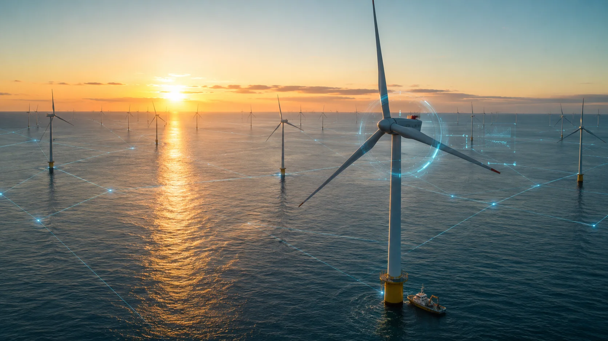
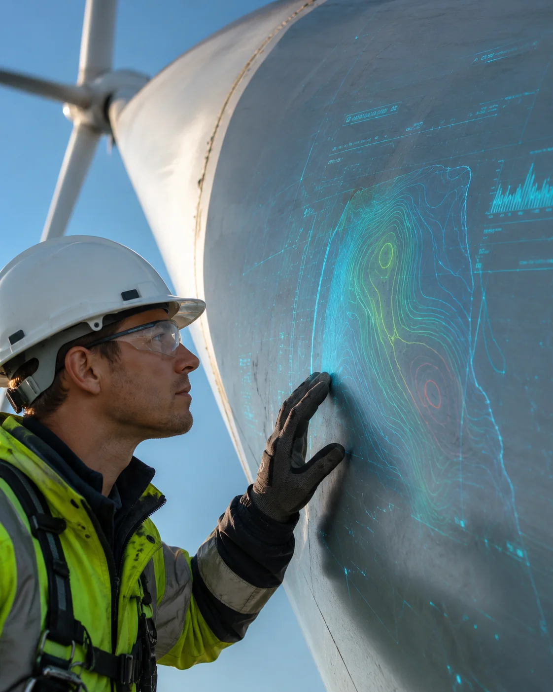
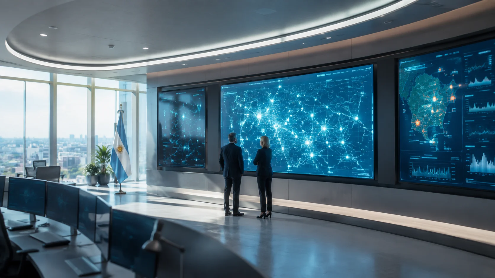
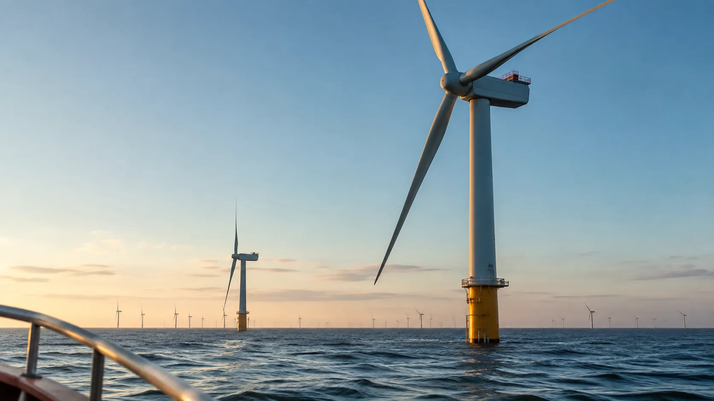
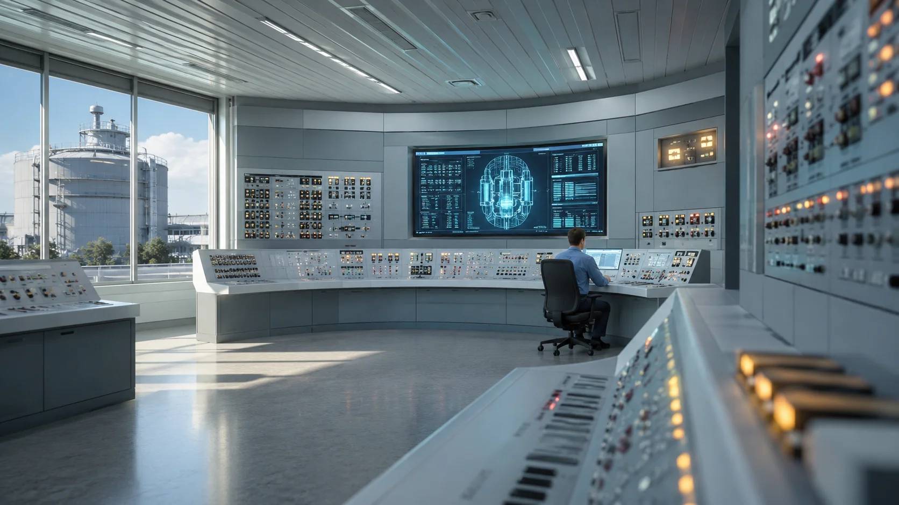
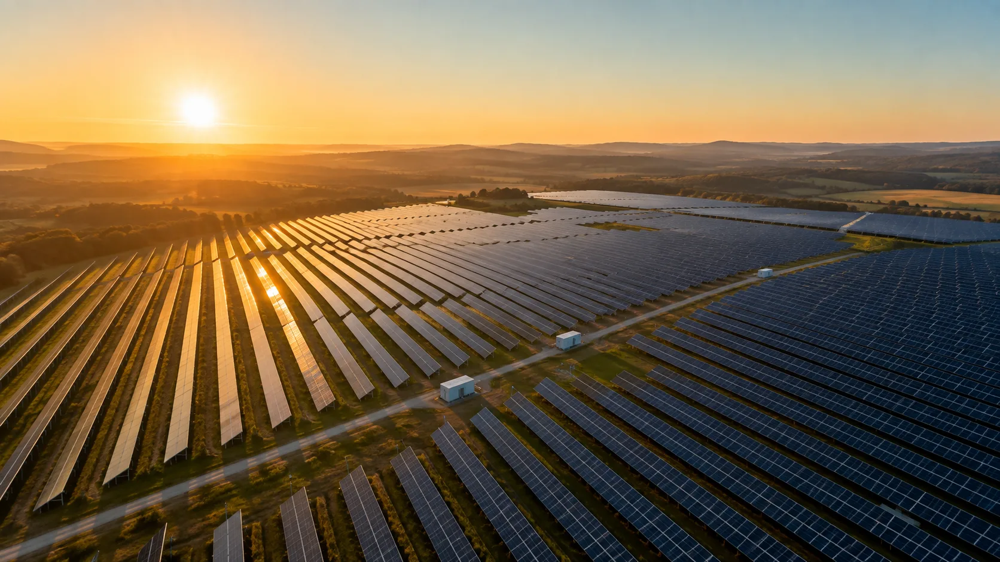
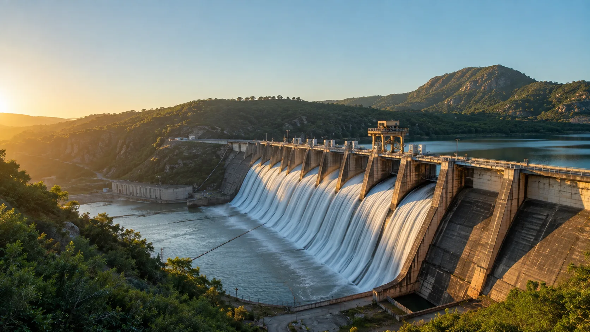
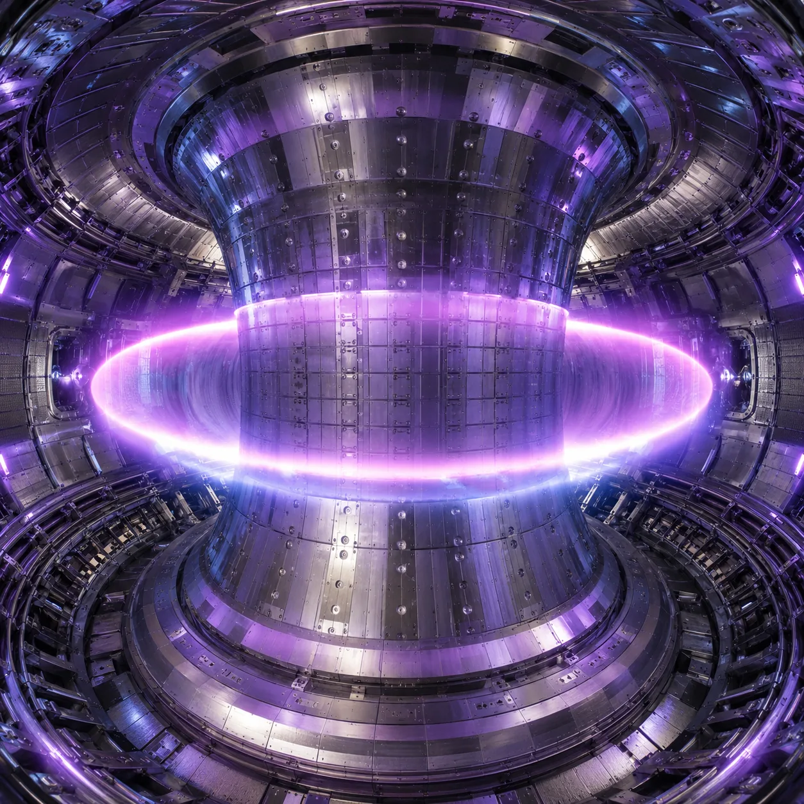

Wizor Energy es el software de auditoría independiente que verifica el estado real, el riesgo y el rendimiento de cualquier activo energético — eólico, nuclear, hidrógeno, solar orbital — con modelos físicos verificables, no con promesas del fabricante. Cero conflicto de interés: el veredicto que cualquier gobierno puede firmar.
Los Estados invierten billones en la transición energética con instrumentos de medición del siglo pasado.
SCADA y centros de despacho muestran el estado eléctrico del presente. Ninguno calcula la degradación termodinámica del futuro ni su costo fiscal.
Los gobiernos auditan sus activos con la telemetría propietaria de los mismos fabricantes y operadores que deberían ser auditados. Declaraciones juradas opacas.
El desgaste de materiales en entornos extremos es estocástico. Las predicciones deterministas fallan; el riesgo financiero real queda sin cuantificar.
Motor híbrido físico-probabilístico: simulación estructural certificable, cuantificación de incertidumbre con garantías estadísticas, y redes neuronales informadas por la física (PINNs) donde no existe historial de datos.
Modelos de elementos finitos de orden reducido y termodinámica verificable. Cada predicción es trazable a una ley física — defendible ante un regulador o un tribunal.
Probabilidades calibradas con intervalos de confianza: riesgo de falla, horas operativas restantes e impacto financiero esperado para la red.
Telemetría OPC UA / IEC 61850 contrastada con teledetección satelital SAR e infrarroja independiente. Nadie puede maquillar sus datos.
Arquitectura DMZ conforme IEC 62443: el operador protege su IP industrial, el Estado recibe su semáforo de riesgo. Solo lectura, custodia criptográfica completa.
Sellado, trazable, con metodología pública — no una captura de pantalla de un dashboard.
Las PINNs y la simulación física generan señales; la Metodología de Evaluación Ponderada y Vinculada (MEPV) decide qué significan. Patentada en Estados Unidos, es la capa donde se fijan los pesos, los índices y las reglas sobre las que se construye cada resultado de Wizor — la razón por la que un número Wizor se puede explicar, no solo creer.
La inferencia estadística y las redes neuronales generan señales. La MEPV decide qué peso tiene cada una y cómo se combinan en un resultado — el diagnóstico final siempre queda del lado del método, no del modelo.
Los pesos e índices de la MEPV son explícitos, versionados y documentados. La misma base matemática se aplica igual a cada activo, en cada país, sin importar qué modelo de IA corra por debajo.
Porque el resultado se construye con reglas conocidas y no con inferencia opaca, cualquier regulador puede reconstruir cómo se llegó a un número. Es auditable por diseño, no por buena voluntad.
La MEPV no nació para auditar turbinas — nació evaluando riesgo humano y de salud en entornos laborales de alta exigencia. Energía es su segunda industria, no su hipótesis inicial.
Patentada en Estados Unidos. Nadie puede copiar el estándar copiando el modelo de IA — tendría que copiar el método.

Cada lectura de campo se contrasta contra el motor físico-probabilístico en tiempo real — la experiencia humana, respaldada por un veredicto que ningún auditor externo puede objetar.
El activo más sensible que audita Wizor no es la turbina — es el dato. La misma disciplina que exigimos a un reactor nuclear la aplicamos a la arquitectura que protege su información.
Los datos de un activo nunca salen de la jurisdicción del Estado que lo audita. Despliegue on-premise o en nube soberana, a elección del gobierno.
Acceso de solo lectura, cifrado de extremo a extremo (AES-256 en reposo, TLS 1.3 en tránsito) y segmentación DMZ conforme IEC 62443. Wizor no puede escribir ni modificar lo que audita.
Cada consulta, cada exportación y cada acceso queda en un libro de auditoría inmutable. El propio regulador puede auditar cómo Wizor audita.
El mismo motor de evaluación de riesgo humano que Wizor aplica a personal industrial en otras industrias certifica a quién se le otorga acceso a datos de infraestructura crítica.
Arquitectura alineada a ISO/IEC 27001, IEC 62443 y el NIST Cybersecurity Framework — certificación formal en curso.
Cada activo se observa desde todos los ángulos posibles — técnico, ambiental, financiero, geopolítico y a medida del cliente.

Sin dashboards que interpretar ni informes de consultoría que esperar — un semáforo de riesgo, actualizado en vivo.
La termodinámica compleja traducida a decisiones de Estado. Metodología pública, versionada y validada actuarialmente.
Probabilidad de caída de planta en las próximas 72 horas.
Capacidad de sostener generación durante anomalías climáticas o espaciales.
Degradación real vs. curva contractual. Detecta cuándo el operador exprime el activo más allá de lo pactado, sacrificando su vida útil.
Energía útil real entregada a la red. La base de la auditoría de subsidios.
Fideicomiso disponible vs. costo predictivo de fin de vida del activo.
De la represa centenaria al panel en órbita geoestacionaria: el mismo lenguaje auditable para toda fuente de generación presente y futura.

OperativoVibración de tren de potencia · integridad de cable submarino · fatiga de palas · corrosión salina · T° rodamientos
Presión PEM · pureza de gas · T° electrolizador · micro-fugas H₂ · calidad de agua

OperativoT° de núcleo · presión de contención · flujo neutrónico · integridad de válvulas · barras de control

OperativoT° de módulo · eficiencia de inversor · soiling · micro-grietas · voltaje de string

OperativoNivel de embalse · presión de turbina · vibración de eje · fisuras de represa · integridad de válvulas
T° de entrada · recuperador de calor · presión de captura · pureza de aminas · eje de vapor

Despliegue 2035+Estabilidad de plasma · T° magnética · integridad de primera pared · flujo de tritio · criogenia
Degradación por radiación · actitud orbital · eficiencia de microondas · T° de paneles · calibración de rectena
Cada activo auditado — en cualquier continente — hace al modelo global más preciso. El segundo jugador en entrar a este mercado nunca alcanza al primero.
El Estándar Wizor se inscribe en la legislación de licitaciones públicas. Metodología abierta, validada en comités internacionales (IEC · IEEE · CIGRE).
Aseguradoras y mercados de capital usan los índices Wizor para pólizas paramétricas y emisión de Bonos Verdes. El activo que Wizor no audita, no se asegura.
Sin lealtades: auditamos GE, Siemens, Vestas o CNNC con la misma vara. Los OEMs no pueden auditar a su propia competencia. Nosotros sí.
Cada activo auditado — cada marca, clima y órbita — madura el modelo global. Con 300,000 nodos, la ventaja predictiva es inalcanzable.
Tres fuerzas independientes convergen hacia el mismo punto — y ninguna depende de que a un gobierno "le guste" Wizor.
Un estándar de auditoría, una vez inscrito en un pliego de licitación, no se retira — se copia en el siguiente. Cada Estado que adopta a Wizor allana el camino al próximo.
Sin verificación de un tercero no hay bono verde emitible ni póliza paramétrica suscribible sobre un activo energético. El mercado financiero termina exigiendo lo que Wizor ofrece hoy por convicción.
Cada activo auditado — cada marca, cada clima, cada falla — hace al modelo global más preciso. El segundo jugador en entrar a este mercado nunca alcanza al primero.
La pregunta que debe quedar en la mente de cualquier lector no es si va a existir un estándar así. Es quién lo va a controlar.
Suscripción anual segmentada por nivel jurisdiccional y capacidad auditada. Add-ons: estrés climático, simulaciones What-If (Digital Twin) y escenarios cibernéticos.
Motor físico-probabilístico validado en eólica offshore. Primer piloto con regulador visionario, backtesting publicado, whitepaper de metodología de índices.
Alianza con reaseguradoras: los índices Wizor respaldan pólizas paramétricas. Solar, hidro y gas CCUS entran a la matriz. Primeros contratos Tier 2.
Mandatos globales de descarbonización y resiliencia exigen auditoría independiente. El Estándar Wizor entra en pliegos de licitación de 15 países.
Los primeros SMR comerciales nacen auditados por Wizor desde el día uno — donde no hay historial de fallas, nuestras PINNs son la única referencia.
Auditoría de plantas de fusión comerciales y las primeras constelaciones SBSP. El clima espacial y la dinámica orbital entran a la matriz estándar.
300,000 nodos, 80 naciones, toda transacción de infraestructura energética —seguro, bono, subsidio, desmantelamiento— referenciada a un índice Wizor.
Agende una demostración ejecutiva con datos reales de su red.
Contactar al equipo fundador